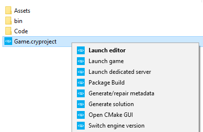
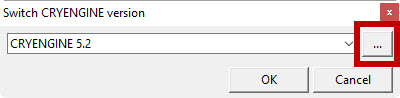

Overview
In your project folder there will be a file of type Cryengine project - the filename extension for these types of file is *.cryproject
When you right-click (as seen below) on such a file you get a number of options where you can easily perform various actions regarding your project.

You may not see the exact format (as shown above) of your Game.cryproject. The reason for this is that you have an older version of the CryVersionSelector installed. To remedy this you need to install the CryVersionSelector for the Engine version (5.4, 5.3, 5.2) that your project is using. For more information about the installation of CryVersionSelector then see the FAQ's at the bottom of this page.
The available options do the following.
| Option | Description |
|---|---|
| Launch editor | Launches the Sandbox Editor associated with the project. You can then open a level from your project by going to File -> Open |
| Launch game | Launches game mode for this project. |
| Launch dedicated server | Launches the dedicated server associated with this project. |
| Package Build | Packages the project to a standalone build. All files that are required for the GameLauncher are moved into the build folder, together with the assets which are filtered and packaged into .pak files. Make sure to compile the code and export the levels of your project to the Engine first. This function will not export the levels to the Engine, and it will not compile the code of your project. It will only package what is already available when you select the option Launch game. |
Generate/repair metadata | Generates the metadata (.cryasset files) for the assets of the project. |
Generate solution | Generates your code solution for C++ and C#. The solution will need to be regenerated if the project is moved to a new hard drive location. For C++ projects this requires you to install Visual Studio and to create a C++ project in Visual Studio so that the C++ compiler is installed. For C# projects you need the Xamarin Studio with the CRYENGINE plugin in order to be able to open the solution. |
| Open CMake GUI | Opens the CMake GUI at the location of the project. This requires a CMakelist.txt file to be in the code folder of the project. This can be used to adjust the CMake settings when generating the solution. |
| Switch engine version | Lets you change the Engine version you use for the project. The Engine versions that appear in the drop-down menu are the versions that you have installed. If you have downloaded an Engine version from GitHub, you can select it here by choosing Switch engine version and then clicking the Browse button in the menu that appears:  You can then browse to the location where you've saved that Engine version. This simply needs to point to the root folder of that CRYENGINE version. This will only work with Engine versions from 5.2.0 and later. |
Adding Console Variables and Console Commands
The *.cryproject files can be used to set specific Console Variables and Console Commands for your project. To do this, you need to open the *.cryproject file with a text editor such as Notepad. The *.cryproject files are simple JSON files which describe the various settings of the project. A default cryproject file will look like this:
{
"console_variables": [
{ "name": "sys_target_platforms", "value": "pc,ps4,xboxone,linux" },
{ "name": "r_displayinfo", "value": "1" }
],
"console_commands": [
{ "name": "map", "value": "example" }
],
"content": {
"assets": [ "Assets" ],
"code": [ "Code" ]
},
"info": {
"name": "Game"
},
"require": {
"engine": "engine-5.4",
"plugins": [
{ "path": "CryDefaultEntities", "type": "EPluginType::Native" },
{ "path": "CrySensorSystem", "type": "EPluginType::Native" },
{ "path": "CryPerceptionSystem", "type": "EPluginType::Native" },
{ "path": "bin/Game.dll", "type": "EPluginType::Managed" }
]
},
"type": "",
"version": 1
}To add a console command to the project, it has to be added to the console_commands list. For example the GameLauncher can be forced to load a map on startup by adding the map command.
"console_commands": [
{ "name": "map", "value": "example" },
]Console variables are added in the console_variables list. For example the displayinfo can be set by using the r_displayinfo variable.
"console_variables": [
{ "name": "r_displayinfo", "value": "1" },
]Always make a backup before you modify it by hand. The Engine is only able to read the file if it contains a valid JSON. If the JSON is not valid the project cannot be started until it has been fixed.
FAQ
Missing or incorrect options when right-clicking the *.cryproject file
This can happen if an older version of the CryVersionSelector is installed. To install the right version of CryVersionSelector go to the root folder of your Engine (by default located in C:\Program Files (x86)\Crytek\CRYENGINE Launcher\Crytek). From there go to Tools\CryVersionSelector. In there, either run Install.bat or open a command window and run cryselect.exe install or in Powershell ./cryselect.exe install.
Unable to generate the solution for the GameSDK
Generating the solution for the GameSDK is not possible, because the GameSDK is compiled in the Engine. To adjust the code of the GameSDK you have to get the Engine source code from Github.
The game looks different if it's launched in the GameLauncher instead of the Sandbox Editor
Before launching the game in the GameLauncher, make sure that you export the levels to the Engine in the Sandbox Editor. This can be done in the Sandbox Editor by going to Open -> Export to Engine.
The GameLauncher is only showing a black screen
This can happen because the GameLauncher is not able to load a project. There are several ways to make the GameLauncher load a project. The easiest way is to right-click the *.cryproject file in your project and selecting Launch Game. Another way is to specify the project to load in the system.cfg of the Engine. This is done by adding the line sys_project=yourproject.cryproject to the system.cfg. The final way to launch the GameLauncher is by adding the project to load to the arguments when running for e.g. GameLauncher.exe -project Game.cryproject.
Another cause of the black screen can be that no map is being loaded. You can use the map command in the console to make sure your game loads the right